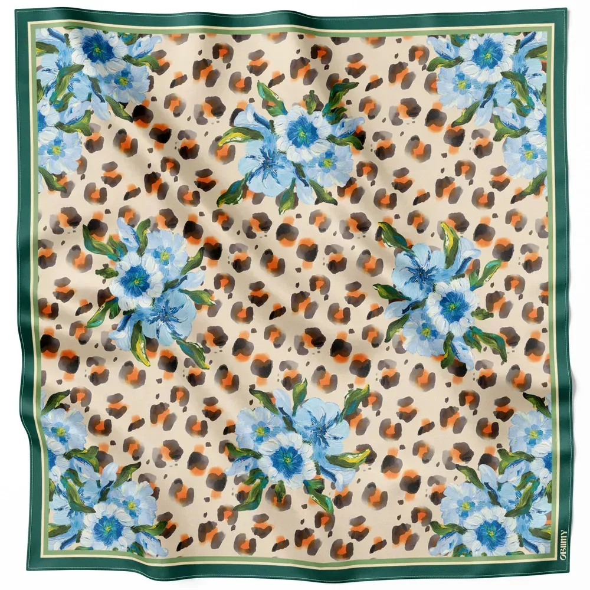
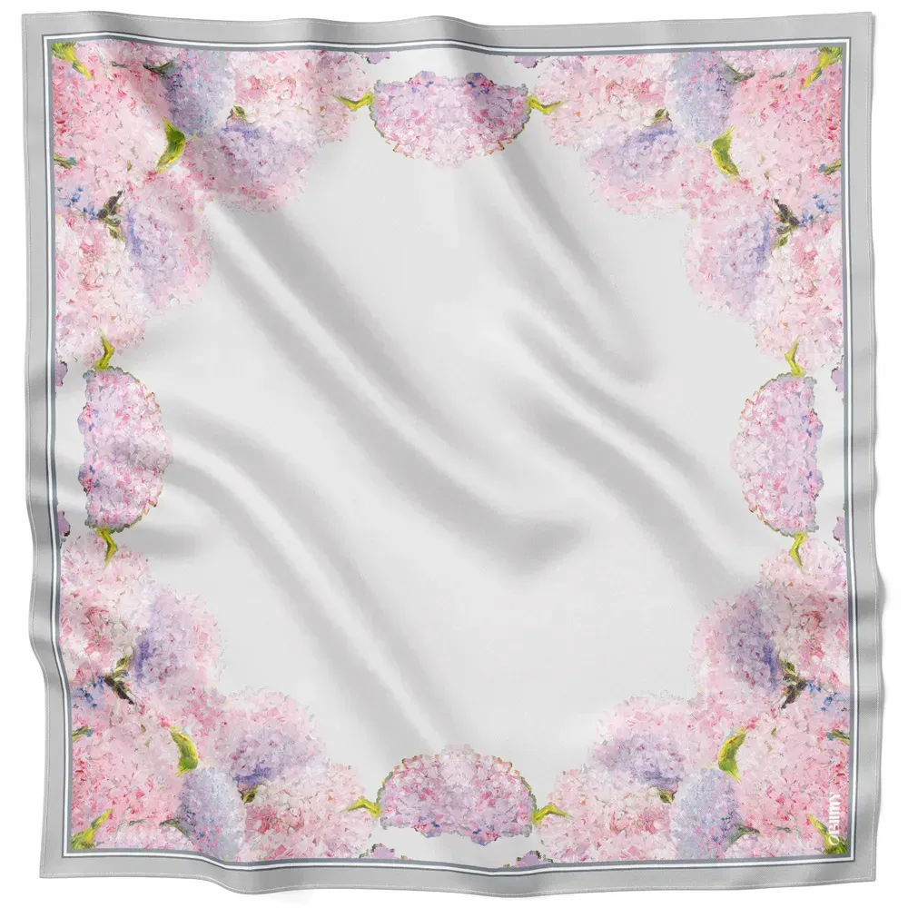
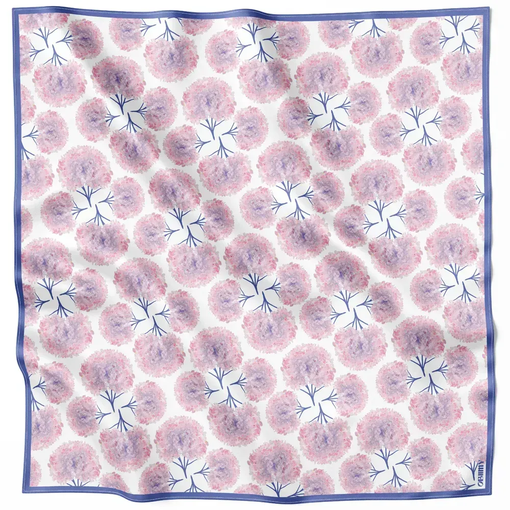
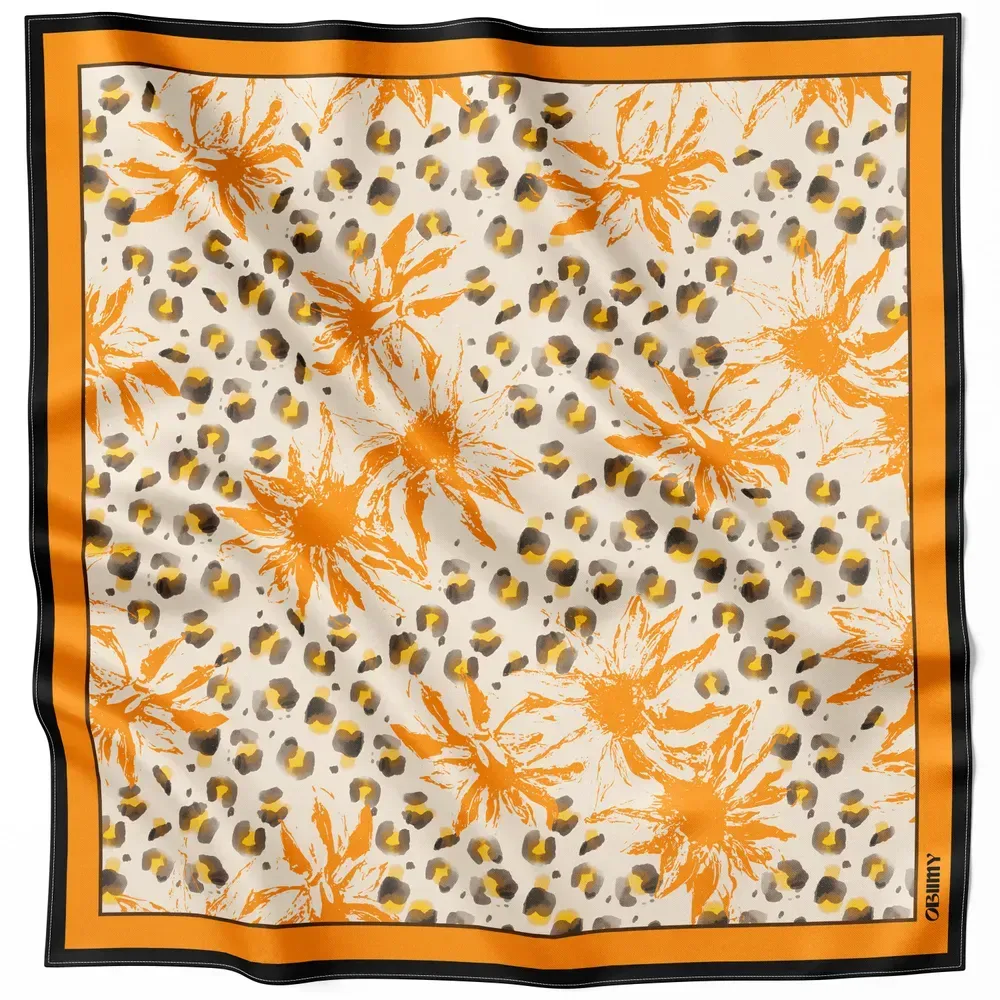
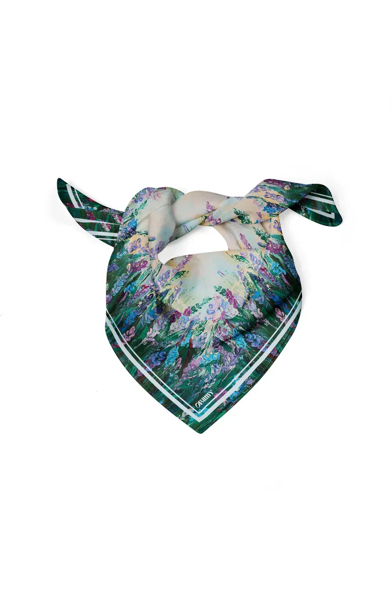

01
 На моделі: хустка «Сміливий дотик» 88 × 88 · 4 400 грн
На моделі: хустка «Сміливий дотик» 88 × 88 · 4 400 грн
Шовк
на кожен
день
- Три історіїМісто · Поле · Студія
- Спершу картинаРозмова зі Світланою Сніжко
- 88 × 88Чому шаль повертається
- Співоча душаХустки, які рятують птахів


02
Поле. Тренч і леопард

04
Натюрморт


Спершу картина. Потім хустка.
«В кризові часи преміальний бізнес можуть відкрити або сміливі, або безумці».
Чому шовк і чому хустки
За останні роки мода повернулася до жіночності: струмливі тканини, квіткові принти, приталені силуети. Хустка з натурального шовку — найкоротший шлях до цього в будь-якому гардеробі.
Звідки береться принт
Кожен принт Obiimy починається з картини Світлани Сніжко. «Пробудження» написане з «Ірисів» навесні, коли все навколо змінюється так стрімко, що не встигаєш отямитись.
Про «Співочу душу»
«Ця колекція про тендітність і силу, про птахів, які співають і зникають, про красу, яка може рятувати». Частина коштів іде на гнізда для сиворакші, птаха з Червоної книги.
Про ручну обробку
Друк і обробка натуральних хусток робить кожен виріб унікальним, тому розмір може відхилятися на 0–2,5 см. Це підпис майстра, а не дефект.
06
Купити з випуску

«Сміливий дотик»Шаль 88 × 88 · з обкладинки4 400 грнКупити
«Між нами»Шаль 88 × 88 · історія «Місто»4 400 грнКупити
«Вир почуттів»Шаль 88 × 88 · історія «Місто»4 400 грнКупити
«Грація»Хустка 65 × 65 · історія «Поле»3 200 грнКупити «Пробудження»Хустка 65 × 65 · двосторонній друк4 320 грнКупити
«Пробудження»Хустка 65 × 65 · двосторонній друк4 320 грнКупити

«Енергія»Шаль 88 × 88 · історія «Студія»4 400 грнКупити «Маків цвіт»Хустка 65 × 65 · історія «Студія»3 200 грнКупити Твіллі «Закоханість»84 × 5 · натюрморт1 600 грнКупити
Твіллі «Закоханість»84 × 5 · натюрморт1 600 грнКупити